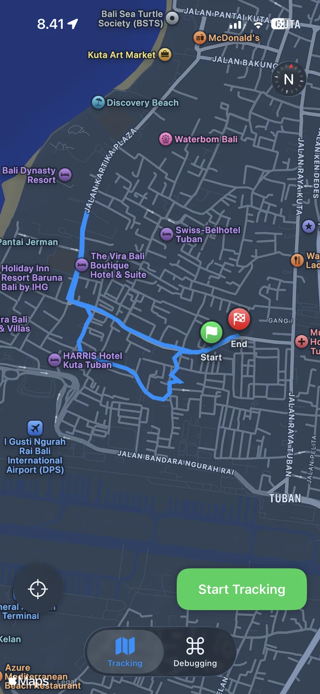
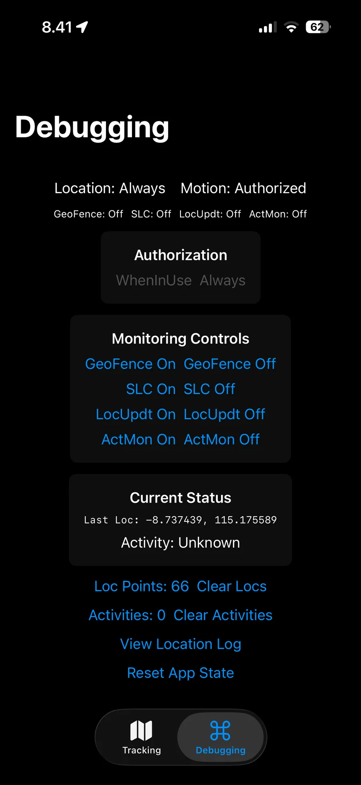
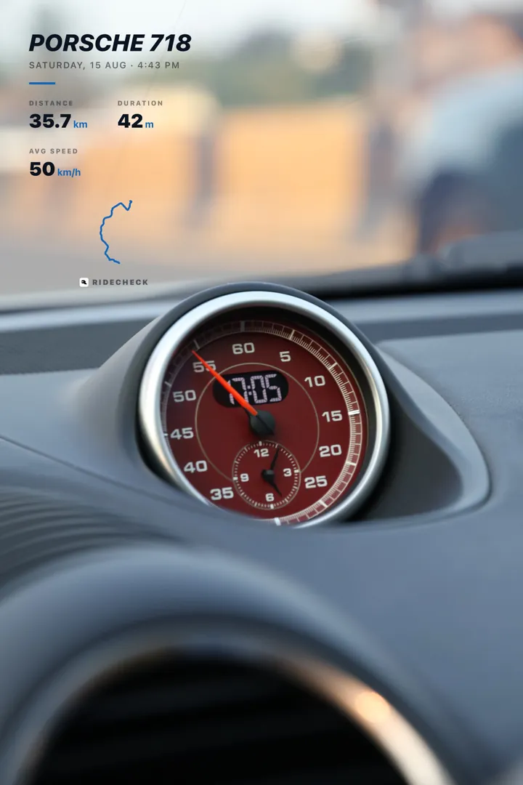
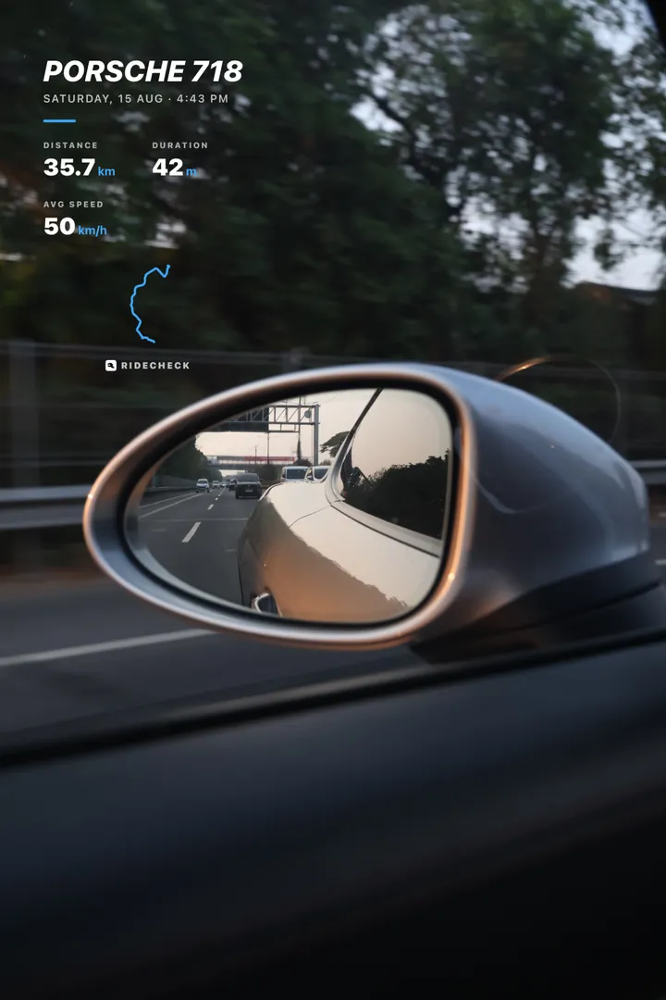
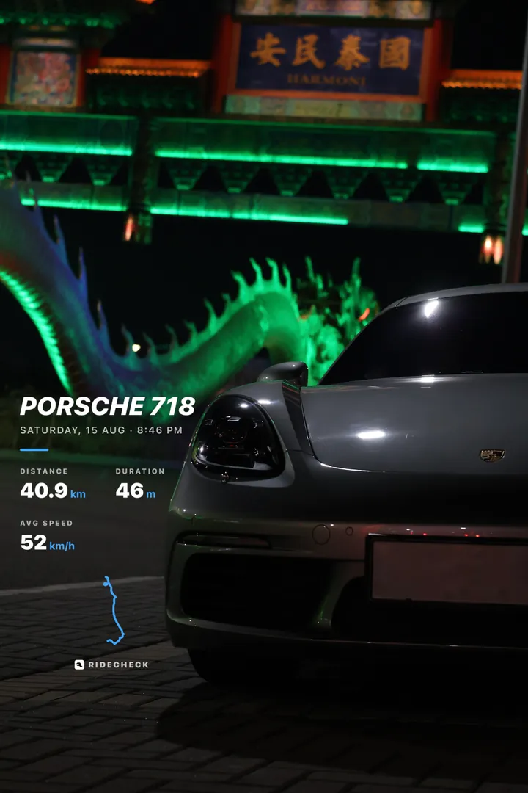
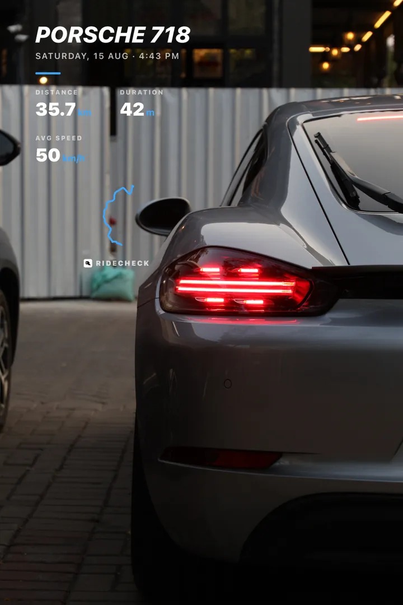
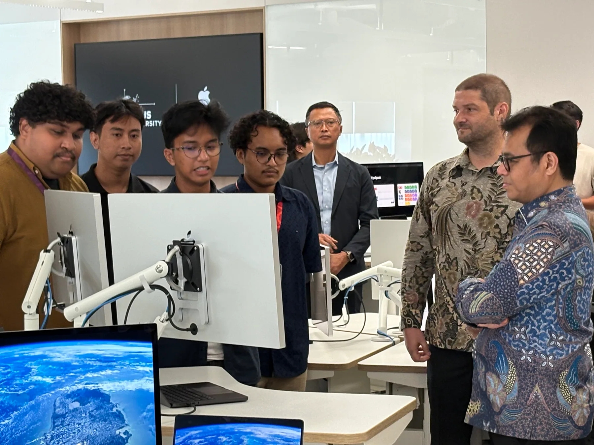
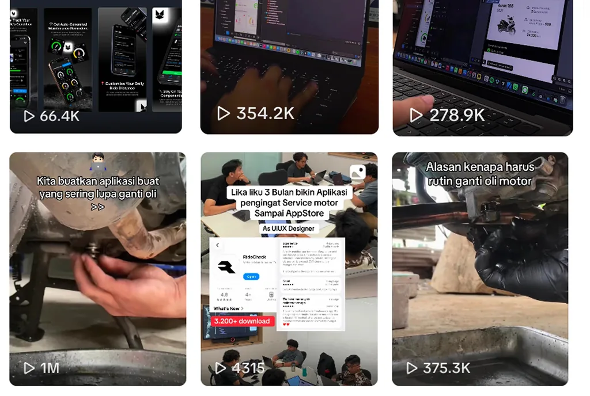
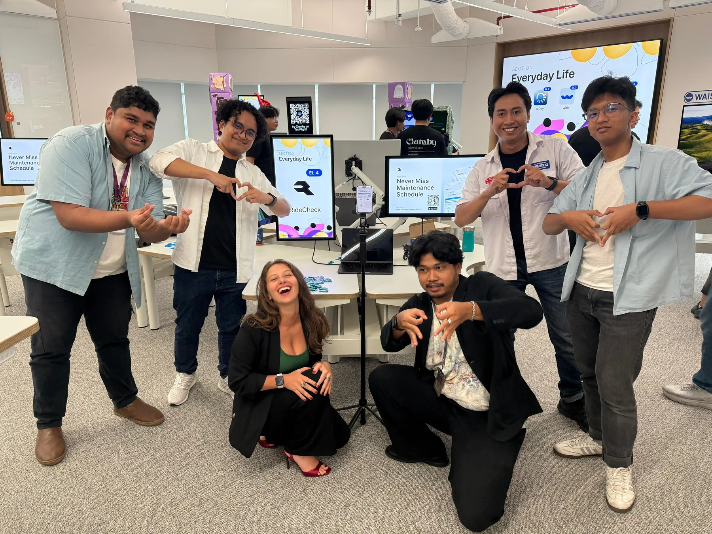

The problem
Maintenance lives on stickers and memory.
Most riders track service intervals with a sticker on the windscreen, or not at all. Parts get replaced when they fail — which is the most expensive time to find out.
Know every part. Trust every ride.
A vehicle-care app for motorcycles and cars that logs every trip by itself and warns riders before a part wears out. As its Head of Product and front-end engineer, I helped take it from a class project at the Apple Developer Academy to 160,000+ downloads, then led it onto Android and the web.
01By the numbers
Total downloads
160K+
Across the App Store and Google Play — grown largely through short-form video.
Monthly active
29K
Riders active in the last 30 days — after peaking above 50K in August.
Paying users
2.3K+
Subscribers and lifetime buyers of RideCheck Pro — 2,300 and counting.
New riders per month, 2026
35.6K
Onboarded in August alone.
Vehicles
63K+
Registered — about 54K motorcycles and 9K cars.
Distance logged
2M+ km
Of trips recorded since May 2026.
Trips
209K+
Rides recorded since May 2026, most of them without a single tap.
Reach
60+
Countries with active riders. Most of them in Indonesia.
#2
Top FreeAuto & Vehicles, Google Play
#3
Top GrossingAuto & Vehicles, Google Play
#9
UtilitiesApp Store, Indonesia
Downloads, vehicles and paying users as of September 2026. Activity figures come from the app’s analytics (Mixpanel): monthly actives are unique users over the last 30 days; trips, distance and new riders are counted from May 2026, when event tracking began.
02Interactive
The same 3D vehicle that ships inside the app. Pick an area, watch it come apart, and tap any part to see what it does and how long it lasts.
Drag to orbit · Pick an area
03The problem
The problem
Most riders track service intervals with a sticker on the windscreen, or not at all. Parts get replaced when they fail — which is the most expensive time to find out.
The insight
Motion and location sensors can tell driving from walking. If the app measures distance on its own, the odometer — and every part’s wear — can update without anyone typing a number.
The answer
Each component counts down by distance and by time. RideCheck warns you while it’s still cheap — then helps you find a workshop, and remembers the service.
04Engineering
The hard part was never the reminders. It was knowing how far someone rode without asking — and without draining their battery.
CMMotionActivity flags automotive movement with confidence, so walks never count.
Significant Location Changes and a geofence at the last stop replace an always-on GPS radio.
Each trip’s distance lands on the vehicle — on Android, from an Expo background task.
Every component’s remaining life drops with it, and a reminder goes out before “soon” becomes “now”.


Proof, not pixels
Battery and accuracy pull in opposite directions, so we tuned the tracker on actual rides around Bali with a debug build that could switch geofencing, significant-location changes, continuous updates and activity monitoring on and off mid-ride — then kept the combination that stayed accurate without keeping GPS awake.
05The app
The best maintenance app is the one you forget about until it matters. Everything here is designed to be read in a glance.
A 3D model of your actual bike or car, its live odometer, and one line that tells you whether anything needs you today.
Every component tracks kilometres used and calendar time, and shows whichever runs out first — so a bike that sits in the garage still gets its oil changed.
Parts move from On Track to Check Soon to Need Replace — and the 3D vehicle glows exactly where the problem lives.
Every service lands in one timeline. Partner workshops scan the rider’s QR code and stamp the service straight into it.
WidgetKit widgets and Live Activities keep the next service in view without opening the app at all.
Auto-Track, Auto-Stop and reminders are on from the first ride — and every one of them can be switched off.
06Trips
Every trip becomes a card built for Stories — distance, time and average speed over a photo from the ride. Riders have shared 3,800+ of them since May.




07Architecture
RideCheck started as a SwiftUI app. At the Apple Developer Institute I led the rebuild for Android and helped build the web portal our partner workshops use — one product, one data model, the same behaviour everywhere.
Swift · SwiftUI
The original. Background trip detection, a SceneKit vehicle, widgets and Live Activities, and StoreKit subscriptions.
TypeScript · React Native
A ground-up migration with feature parity: background location tasks, a local SQLite store, native widgets and in-app purchases.
TypeScript · Next.js
A portal where partner workshops scan a rider’s QR code and record the service — plus ridecheck.id and its 3D explorer.
08My role
Four people built RideCheck. I’m its Head of Product and its front-end engineer, which in a team of four means a lot more than either title.
Conceptualised RideCheck, shaped it from an Academy challenge into the roadmap we presented to Indonesia’s Deputy Minister of Communication and Digital Affairs, and still set the direction: what we build next, and why.
Co-engineered the background tracker on CoreLocation, CoreMotion and MapKit — trading GPS precision against battery until both were good enough to forget about.
Built the SwiftUI app with adaptive layouts that run on older iOS versions as well as the newest, and the animations that make it feel alive.
Led the migration to React Native and Expo — background tracking, local storage, widgets and purchases — to reach riders on the platform most of Indonesia uses.
Helped build the partner-workshop portal, where mechanics scan a rider’s QR code to log a service, and the ridecheck.id website.
Drew the early user flows and lo-fi prototypes, then validated the product on real rides and in interviews with riders.
09Journey
From Academy challenge to Apple Developer Institute, with most of the growth earned in public — through short videos on TikTok and Instagram.
Feb 2025
Four of us meet in the same cohort. RideCheck starts as a challenge project about forgotten service intervals.
Jul 2025
We start posting short videos — oil changes, bikes, and building the app in public. Views turn into downloads.
Dec 2025
A 29% conversion from impressions, a five-star rating, and a roadmap presented to the Deputy Minister of Komdigi.
Mar 2026
RideCheck is selected for the Institute for Entrepreneurship. The Android rebuild begins.
Jun 2026
RideCheck lands on Google Play and is featured in Bloomberg Technoz.
Aug 2026
The biggest month yet. Monthly actives peak above 50,000.
Sep 2026
63,000 vehicles, 2,300 paying users, and partner workshops writing service records into the app.
10Beyond the code
Bloomberg TechnozBusinessweek · June 2026
RideCheck’s story, told in Bloomberg Technoz’s Businessweek edition.

Reach · TikTok & Instagram

Dhafin on product, Fazry on design, Tio on the back end, and me on the front end.
